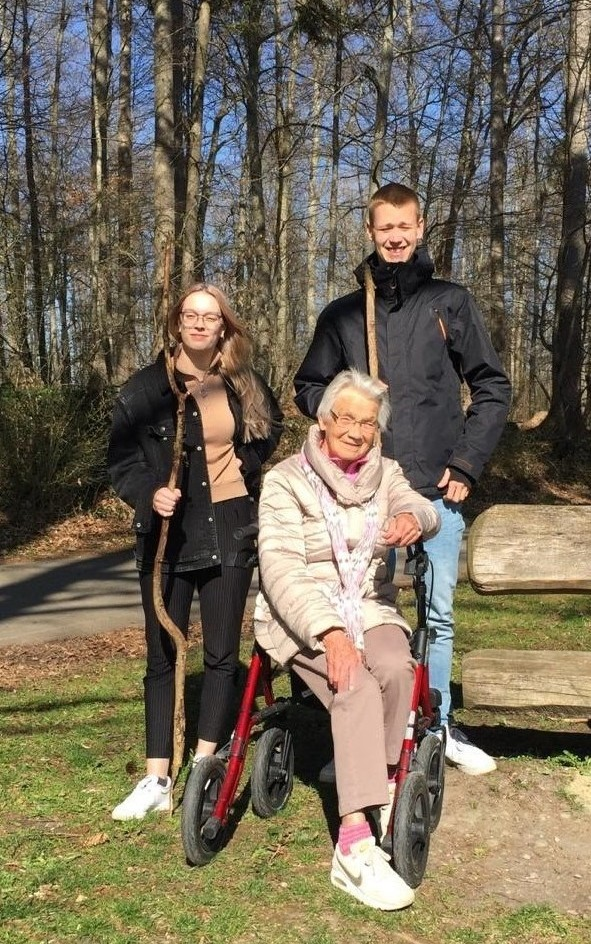

Mein Name ist Annika König. Ich komme aus der Nähe von Ravensburg. Bin 20 Jahre alt und wohne derzeit in Furtwangen.
Ich studiere Online Medien im zweiten Semester. Dies ist eine Mischung zwischen Medienkonzeption und Medieninformatik. Man programmiert aber beschäftigt sich auch mit Gestaltung.
Ich mag Tiere sehr gerne, wie beispielsweise Hunde, Eulen und besonders Katzen. Am liebsten habe ich meine Katze Felix.
Eines von vielen Dingen, die ich mal machen möchte.
Dieser Sound soll gruselig sein. Ist er aber meiner Meinung nach nicht. Übrigens zählt Horror nicht zu meinen Lieblings Genres.
Hier noch eine Musik Audio, weil ich Musik mag, wie vermutlich die meisten. habe aber leider keine Audio gefunden, die mir besonders gut gefällt.
Ich zeichne und male sehr gerne, wenn ich die Zeit dafür habe.
Das habe ich zum Beispiel mal gezeichnet.
Hoffentlich bald wieder möglich...
Meine Familie ist mir wichtig und ich unternehme gerne etwas mit ihnen.
Wir gehen normalerweise oft miteinander essen.